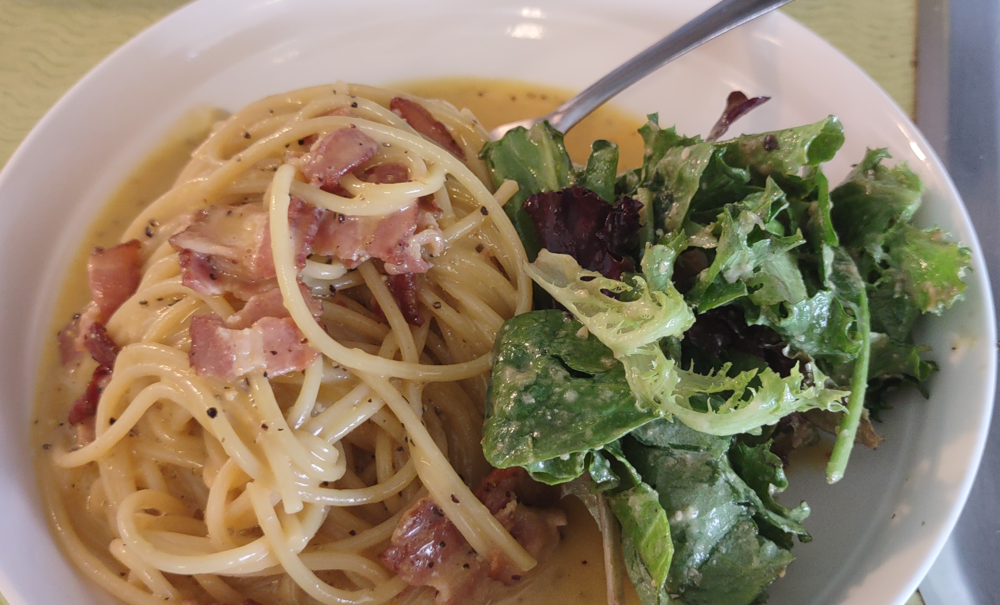

The college student friendly Carbonara recipe

Description
Carbonara is traditionally cooked with Guanciale/Pancetta for meat and Parmesan Reggiano but that's a bit out of my budget. Here's my take that's beginner friendly and college student budget friendly.
Oh I also don't have 2 pans to cook with so I've adapted this recipe for a large cooking vessel (in my case a wok) and another cooking vessel for the bacon (in my case a small saucepan).
Ingredients
-
Spaghetti, bucatini, or rigatoni
-
Uncooked bacon. (or guanciale/pancetta)
-
1 egg for each person
-
Cheese. It could literally be any type of cheap cheese, parmesan works best but i've used chedder (don't kill me Italians)
-
Black pepper
-
Salt
-
Milk or heavy cream (optional and considered a sin by Italians but it tastes good so... up to you)
Steps
-
Heat enough water to cover your pasta in the large cooking vessel on High heat and salt it. (I genuinely don't know how much of either you are supposed to add)
-
While the water is heating up, chop up the bacon into small pieces, say 1/4 inch slices.
-
Heat up your other cooking vessel on medium heat and cook the bacon. You don't need to add oil because it's bacon. I don't know BA tells you to add it.
-
Once the pasta water comes to a boil, add the pasta and cook until al dente. Probably reduce your heat to medium-high and watch to ensure it doesn't spill over.
-
Grate your cheese into a bowl and crack your egg(s) into it. Add milk/cream to this mixture. I don't know how much so I guess every time. Mix together with a fork or a whisk if you are fancy and like wasting time on cleanup.
-
Once the pasta is finished cooking (it should be cooked to be firm to the bite aka al dente), save a cup of pasta water as reserve and add the bacon. Scrape as much as you can off the bottom. Alternatively, add the spagetti to the bacon cooking vessel but I had to use a small saucepan so that was not an option.
-
Wait for the pasta to cool down a bit if it's hot. It should be slightly too hot to touch but not burning hot. You do not want to make scrambled eggs.
-
Add the egg/cheese/milk mixture to the pasta and stir constantly. You should get a creamy sauce mixture similar to the consistancy of heavy cream. If it's too thick, add in small amounts of pasta water. If it didn't work, question why you followed my recipe and consider watching a pro make it.
-
Enjoy with a salad or on it's own.